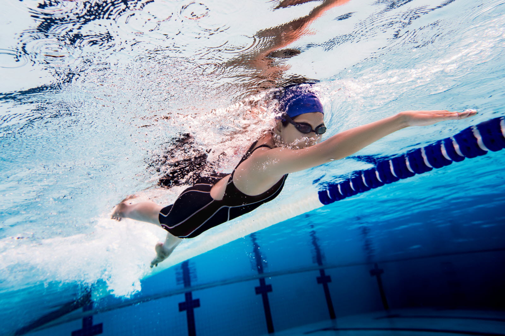
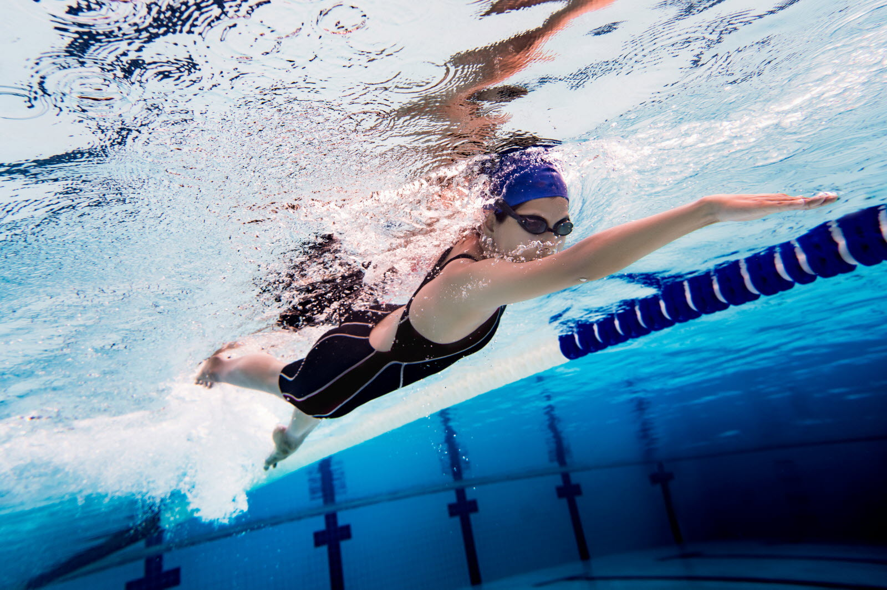
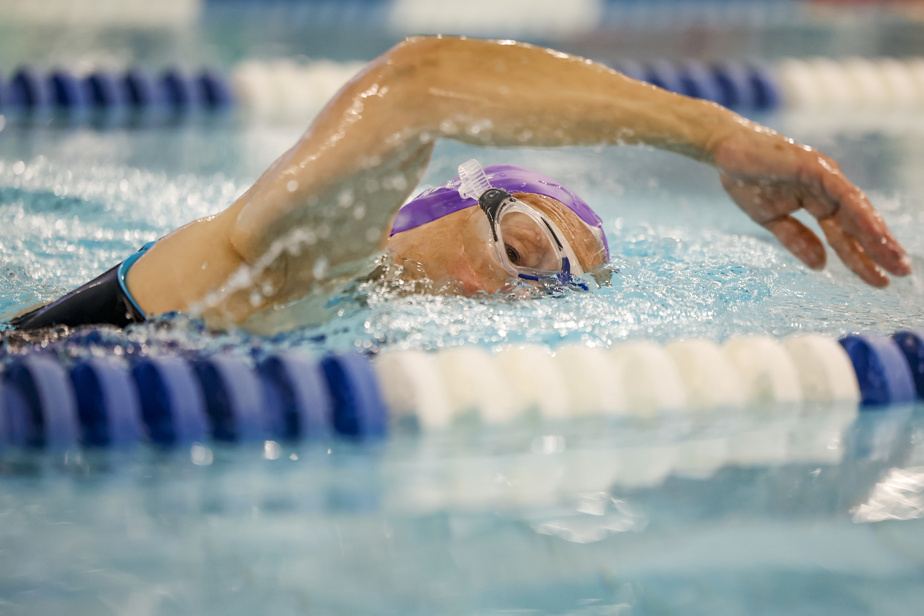

Swimming
Swimming is a sport and physical activity practised in water, whether in swimming
lakes, rivers or even the sea. It's one of the most complete physical activities
and beneficial to health. Here's some information about swimming:
 

Health benefits: Swimming offers numerous health benefits. It improves
cardiovascular fitness, strengthens muscles, promotes flexibility, and helps maintain a
healthy body weight. It is also beneficial for mental health, helping to
reduce stress and improve general well-being.
Accessible to all ages: Swimming is an activity accessible to everyone, from
from infants to the elderly. It is often recommended for children, as it contributes to
the development of motor coordination, self-confidence and water safety.
Low impact on joints: Swimming is a low-impact activity for joints.
joints. The water supports the body's weight, which means that swimmers do not experience
impact of running or other high-impact sports.
Variety of swimming styles: There are different swimming styles, including breaststroke, crawl,
backstroke and butterfly.
backstroke and butterfly. Each of these strokes requires different muscle groups, which
which means you can vary your training and work the whole body.
Competitive sport: Swimming is also a competitive sport, with competitions at all levels, from
local to international.
from local competitions to the Olympic Games. Competitive swimmers
train intensively to improve their speed, technique and endurance.
Leisure activity: Apart from competitions, swimming is also a popular leisure activity.
activity. Public pools, beaches and lakes are popular places for swimming and recreational
and recreational swimming.
Water safety: Learning to swim is essential for water safety. Swimming can
save lives by teaching individuals how to stay safe in the water and how to react
in an emergency.
Find out more here.

Swimming pools in Hauts de France :
- Louvroil: ASGL Natation Louvroil
- Hornaing: Aqua Club Hornaing
- Villeneuve d'Ascq: AVAN Villeneuve-d'Ascq
- Avesnes sur Helpe: Avesnes Natation
- Lille Cedex : C O S Les Nageurs Lillois
- Aulnoye Aymeries : CN Albatros Aulnoye-Aymeries
- Wattignies: CN Wattignies
- Haussy: Cercle des Nageurs du Pays Solesmois
- Halluin : Cercle Nageurs Halluinois
- Rieulay : Cercle Nautique Somain Aniche
- Le Doulieu: C.N Les Dauphins Le Doulieu
- Loos: Club de W-P de Wattignies
- Solesmes: CN 92 Solesmes
- Fourmies: Club Nautique Fourmies
- Croix: Club Nautique de Croix
- Lambersart : Club Nautique Lambersartois
- Orchies: Club Nautique Orchies
- Recquignies : D.C.Boussois Recquignies
- Wattrelos: Dauphins Wattrelos
- Denain: Denain Natation - Porte du Hainaut
- Haubourdin : Piscine Neptunia à Haubourdin
- Dunkerque : Dunkerque Natation
- Tourcoing : Enfant Neptune Tourcoing
- Bray Dunes: Espadon Nage Club
- Douai: F.N.C Douai
- Estaires : Flandre Lys Natation
- Douai: Francs Nageurs Cheminots de Douai Natation Artistique
- Gravelines: Gravelines Natation
Swimming is a sport and physical activity practised in water, whether in swimming lakes, rivers or even the sea. It's one of the most complete physical activities and beneficial to health. Here's some information about swimming:
Health benefits: Swimming offers numerous health benefits. It improves cardiovascular fitness, strengthens muscles, promotes flexibility, and helps maintain a healthy body weight. It is also beneficial for mental health, helping to reduce stress and improve general well-being. Accessible to all ages: Swimming is an activity accessible to everyone, from from infants to the elderly. It is often recommended for children, as it contributes to the development of motor coordination, self-confidence and water safety. Low impact on joints: Swimming is a low-impact activity for joints. joints. The water supports the body's weight, which means that swimmers do not experience impact of running or other high-impact sports.
Variety of swimming styles: There are different swimming styles, including breaststroke, crawl,
backstroke and butterfly.
backstroke and butterfly. Each of these strokes requires different muscle groups, which
which means you can vary your training and work the whole body.
Competitive sport: Swimming is also a competitive sport, with competitions at all levels, from
local to international.
from local competitions to the Olympic Games. Competitive swimmers
train intensively to improve their speed, technique and endurance.
Leisure activity: Apart from competitions, swimming is also a popular leisure activity.
activity. Public pools, beaches and lakes are popular places for swimming and recreational
and recreational swimming.
Water safety: Learning to swim is essential for water safety. Swimming can
save lives by teaching individuals how to stay safe in the water and how to react
in an emergency.
Find out more here.
Swimming pools in Hauts de France :
- Louvroil: ASGL Natation Louvroil
- Hornaing: Aqua Club Hornaing
- Villeneuve d'Ascq: AVAN Villeneuve-d'Ascq
- Avesnes sur Helpe: Avesnes Natation
- Lille Cedex : C O S Les Nageurs Lillois
- Aulnoye Aymeries : CN Albatros Aulnoye-Aymeries
- Wattignies: CN Wattignies
- Haussy: Cercle des Nageurs du Pays Solesmois
- Halluin : Cercle Nageurs Halluinois
- Rieulay : Cercle Nautique Somain Aniche
- Le Doulieu: C.N Les Dauphins Le Doulieu
- Loos: Club de W-P de Wattignies
- Solesmes: CN 92 Solesmes
- Fourmies: Club Nautique Fourmies
- Croix: Club Nautique de Croix
- Lambersart : Club Nautique Lambersartois
- Orchies: Club Nautique Orchies
- Recquignies : D.C.Boussois Recquignies
- Wattrelos: Dauphins Wattrelos
- Denain: Denain Natation - Porte du Hainaut
- Haubourdin : Piscine Neptunia à Haubourdin
- Dunkerque : Dunkerque Natation
- Tourcoing : Enfant Neptune Tourcoing
- Bray Dunes: Espadon Nage Club
- Douai: F.N.C Douai
- Estaires : Flandre Lys Natation
- Douai: Francs Nageurs Cheminots de Douai Natation Artistique
- Gravelines: Gravelines Natation